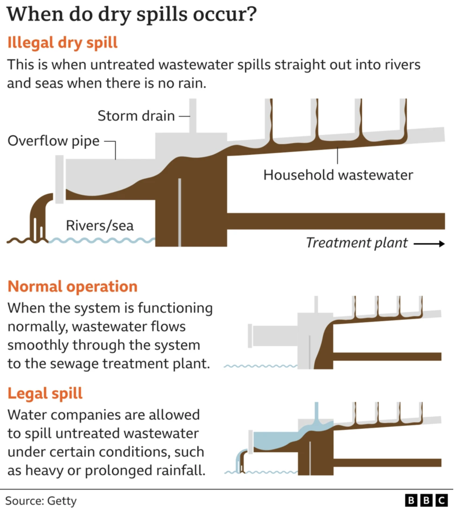
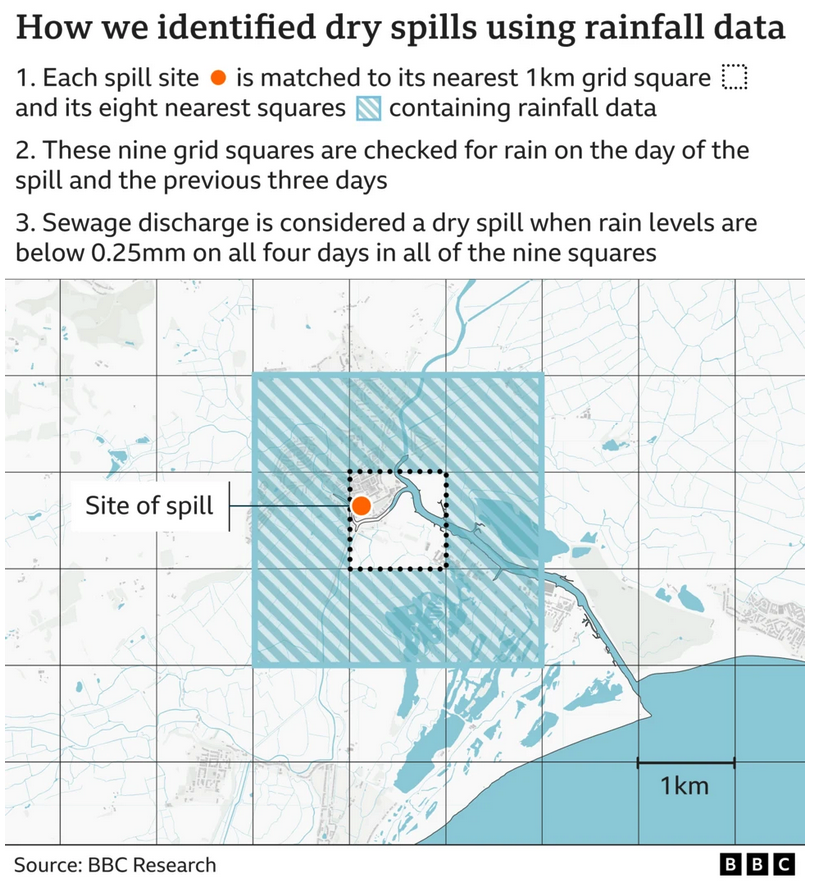

4 Dry Spill Exploration
4.1 What Is a Dry Spill?
4.1.1 Context
The earliest sewer systems in England, built during the Victorian era, were combined systems, using a single pipe to carry both wastewater from homes and businesses and stormwater from rainfall. Since the 1960s, however, new sewer networks have been constructed as separate systems, with one pipe for sewage and another for surface water in built-up areas. Today, around 20% of England’s sewer network remains combined.
In most cases, wastewater is transported through the sewer network to treatment works, where it is processed and then released into rivers or the sea. However, in certain circumstances, such as periods of heavy rainfall, water companies are permitted to discharge untreated sewage into inland waters through storm overflows to prevent the system from being overwhelmed.

The deliberate discharge of sewage in dry conditions, known as a dry spill, is prohibited under environmental law. Because no rainfall is available to dilute the sewage, dry spills pose a particularly high risk of environmental harm to receiving waters and ecosystems.
4.1.2 Definitions
4.1.2.1 Environmental Agency
The Environment Agency (EA) defines a dry spill as the use of a storm overflow on a dry day, meaning no rainfall above 0.25 mm on that day or during the previous 24 hours.1
Storm overflows are not expected to operate on dry days, although exceptions can occur. In large catchments, for example, rainfall upstream may take significant time to travel downstream before reaching the overflow. For this reason, the EA treats any recorded dry-day spill as a potential breach until further investigation confirms the cause.
4.1.2.2 BBC
In its reporting, the BBC defines a dry day more conservatively: no measurable rainfall (≥0.25 mm) during the preceding four days within a 9 \(km^2\) area around each overflow site.2 This approach was intended to ensure that spills flagged as occurring on dry days could not plausibly be attributed to recent rainfall still moving through the catchment. The 9 \(km^2\) buffer was used as a proxy for the catchment feeding each overflow.

4.2 Estimating Dry Spills
We estimate dry spills using alternative methodologies and validate these against the figures reported by the EA3 and the BBC4.
We present two versions of the dry-spill totals to reflect differences in published samples:
- EA sample: aggregates across all companies and sites.
- BBC sample: excludes Welsh Water entirely and discounts “more than one-third of United Utilities’ overflows” where “the discharge data provided to the EA did not correspond to their 2022 annual report summarising this data.”
The EA reports 20,000 dry spills in 2022 and 18,000 in 2023. Our closest estimates use the criterion of no measurable rainfall (≥0.25 mm) in the preceding two days within either a \(km^2\) (column 1) or a 9 \(km^2\) buffer (column 2). We prefer the latter, as it is slightly more conservative.
Yearly Dry Spill Counts Under Alternative Methods
Comparison of dry-spill estimation methods vs. published EA/BBC benchmarks
- Rainfall Coverage: 1km² uses the nearest grid; 9km² uses a 3×3 grid around each site (BBC).
- Temporal Window: 2-day (day 0–1) vs 4-day (day 0–3) lookback.
- Data Handling: Complete requires full rainfall coverage; Partial OK allows missing values when applying the 0.25mm threshold.
- Highlighting: Light green marks the preferred method for each sample; Light orange marks the published benchmark.
The BBC—using a more conservative methodology—reports 6,000 dry spills in 2022. To create a comparable sample, we exclude Welsh Water and remove any United Utilities overflow site where the annual spill count exceeds 25% of the EA’s published total for that site.5 (see also Section 2.2). This adjustment removes 36% of United Utilities’ sites, broadly matching the BBC’s approach.
Our closest estimates apply the criterion of no measurable rainfall (≥0.25 mm) in the preceding four days within a 9 \(km^2\) buffer around each spill site with complete rainfall coverage (column 4). However, we prefer the version that allows for sites with missing rainfall data (column 5), since—as shown in the map below—missing data occurs almost exclusively along the coast, where excluding sites would not be meaningful.
Yearly Dry Spill Counts Under Alternative Methods
Comparison of dry-spill estimation methods vs. published EA/BBC benchmarks
- Rainfall Coverage: 1km² uses the nearest grid; 9km² uses a 3×3 grid around each site (BBC).
- Temporal Window: 2-day (day 0–1) vs 4-day (day 0–3) lookback.
- Data Handling: Complete requires full rainfall coverage; Partial OK allows missing values when applying the 0.25mm threshold.
- Highlighting: Light green marks the preferred method for each sample; Light orange marks the published benchmark.
Going forward, we therefore report results using two definitions only: (i) no measurable rainfall (≥0.25 mm) in the preceding two days within a 9 \(km^2\) buffer, and (ii) no measurable rainfall in the preceding four days within a 9 \(km^2\) buffer.
4.3 Location of Dry Spills
The map below shows all sites where dry spills occurred between 2021–2023, categorized by the most restrictive condition under which they experienced dry spills. Sites are colored using a traffic-light system:
- 🟢 Green: Sites with dry spills under the 2-day window with partial data allowed (allows missing values when applying the 0.25mm threshold)
- 🟠 Orange: Sites with dry spills under the 4-day window with partial data allowed
- 🔴 Red: Sites with dry spills under the strictest 4-day window with complete data required (full rainfall coverage, no missing values)
We prefer including sites with missing rainfall data (orange), as these are concentrated along the coast, where exclusion would remove otherwise valid estimates.
4.4 Dry Spill Geographic Distribution in 2023
4.4.1 Total Dry Spills
XXX The maps below display the total number of dry sewage overflow spills, aggregated at the Middle Layer Super Output Area (MSOA)—a standard statistical geography in England designed to represent areas with roughly similar population sizes (~8000 people or ~3000 households).
XXX Because MSOAs differ considerably in land area, it’s difficult to draw conclusions. Even so, dry spills appear relatively evenly distributed across England. XXX
4.4.2 Population-Density Weighted Dry Spills
XXX The maps display the total number of dry sewage overflows, normalised by residents per square kilometre. Dry spill intensity appears to be higher in certain regions. From these maps alone, we cannot determine whether this reflects older sewer infrastructure, operational issues, or other factors. XXX
https://environmentagency.blog.gov.uk/2024/08/28/what-are-dry-day-spills/↩︎
https://www.bbc.co.uk/news/science-environment-66670132↩︎
https://environmentagency.blog.gov.uk/2024/10/10/regulating-the-water-industry-our-approach-what-were-changing-and-new-powers-in-the-water-bill/↩︎
https://www.bbc.co.uk/news/articles/c4nn46rjej6o↩︎
https://environment.data.gov.uk/dataset/21e15f12-0df8-4bfc-b763-45226c16a8ac↩︎